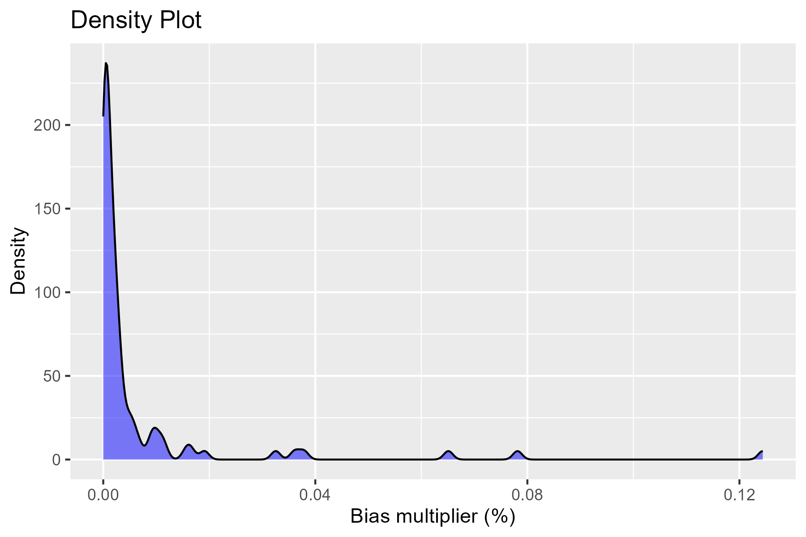
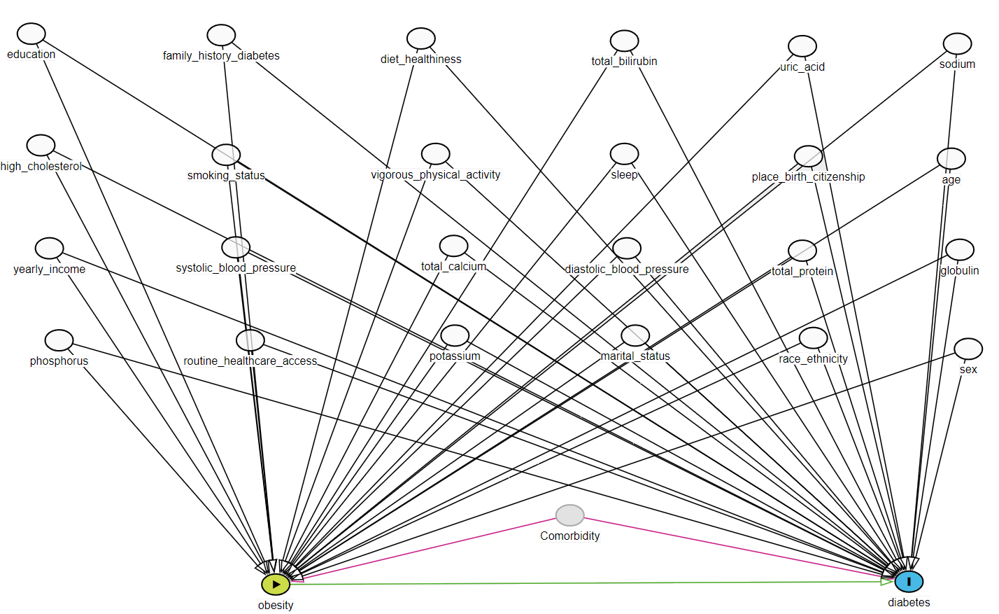

8 Step 5: Covariates
We select 2 types of covariates for the next step (to analyze using propensity score or other alternative approaches):
8.1 Ideal number of prioritised covariates
Based on calculated \(log-absolute-bias\), we select top k recurrence covariates to be used in the hdPS analyses later. Below is a plot of all of the absolute log of the Bias Multiplier:
We used \(k = 50\) covariates selected by the hdPS algorithm (we call them ‘hdPS covariates’). What should be the cutpoint?
- Absolute log of the Bias Multiplier has a null value of 0. Anything above 0 is an indication of confounding bias adjusted by the adjustment of the associated recurrent covariate.
- For large proxy data sources, \(k = 500\) is suggested (Schneeweiss et al. 2009).
- See Sensitivity Analysis section for an understanding of how to choose a value based on an ad-hoc process.
8.2 Selected hdPS variables (proxies)
hdps.dim <- out3$autoselected_covariate_df
dim(hdps.dim) # id + k
#> [1] 3839 51
head(hdps.dim)[,1:3]hdps.dim$id <- hdps.dim$idx
hdps.dim$idx <- NULL8.3 Investigator-specified covariates
\(25\) investigator-specified covariates are selected based on variables in the DAG that are available in the data set.
We should also add necessary interactions of these investigator-specified covariates, or add other useful model-specifications (e.g., polynomials).

- 14 demographic, behavioral, health history related variables/access
- Mostly categorical
- 11 lab variables
- Mostly continuous
exposure <- "obese"
outcome <- "diabetes"
investigator.specified.covariates <-
c(# Demographic
"age.cat", "sex", "education", "race",
"marital", "income", "born", "year",
# health history related variables/access
"diabetes.family.history", "medical.access",
# behavioral
"smoking", "diet.healthy", "physical.activity", "sleep",
# Laboratory
"uric.acid", "protein.total", "bilirubin.total", "phosphorus",
"sodium", "potassium", "globulin", "calcium.total",
"systolicBP", "diastolicBP", "high.cholesterol"
)
length(investigator.specified.covariates)
#> [1] 258.4 Merged data
load("data/analytic3cycles.RData")
hdps.data <- merge(data.complete[,c("id",
outcome,
exposure,
investigator.specified.covariates)],
hdps.dim, by = "id")
dim(hdps.data)
#> [1] 3839 78Variable count (78)
- 1 ID variable
- 1 exposure
- 1 outcome
- 25 investigator-specified covariates
- 50 hdPS variables